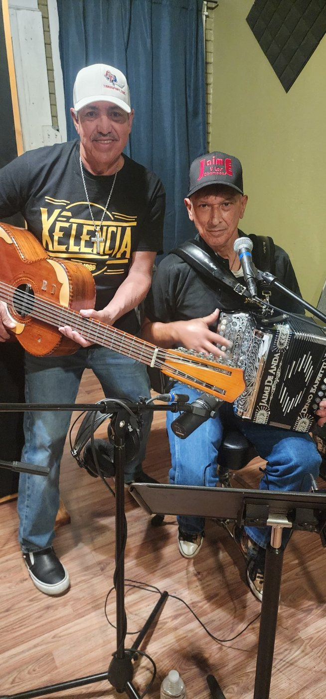

What We’re Building
We are working to build an online database dedicated to Tejano musicians and Tejano music history — a living archive preserving photographs, recordings, stories, and historical materials for future generations.

Registration Now Open
Help us preserve Tejano history, one story at a time.

You’re Invited
We are inviting you because you are part of the story of Tejano music. Your experiences, memories, and contributions help tell the story of the artists, communities, and moments that shaped this culture.
Advance registration is requested. The registration button opens our signup form in a new tab.
A Personal Invitation
This invitation is extended with respect and gratitude to those who performed, promoted, recorded, supported, or helped carry Tejano music forward. We would be honored to help preserve your place in this history.
We are working to build an online database dedicated to Tejano musicians and Tejano music history — a living archive preserving photographs, recordings, stories, and historical materials for future generations.
Musicians, veteran performers, families of musicians who have passed, and others with firsthand stories or historical materials connected to Tejano music are encouraged to register.
September 20 • San Antonio
Registration is now open for Documentation Day #2.
Register NowQuestions? admin@vivatejano.org